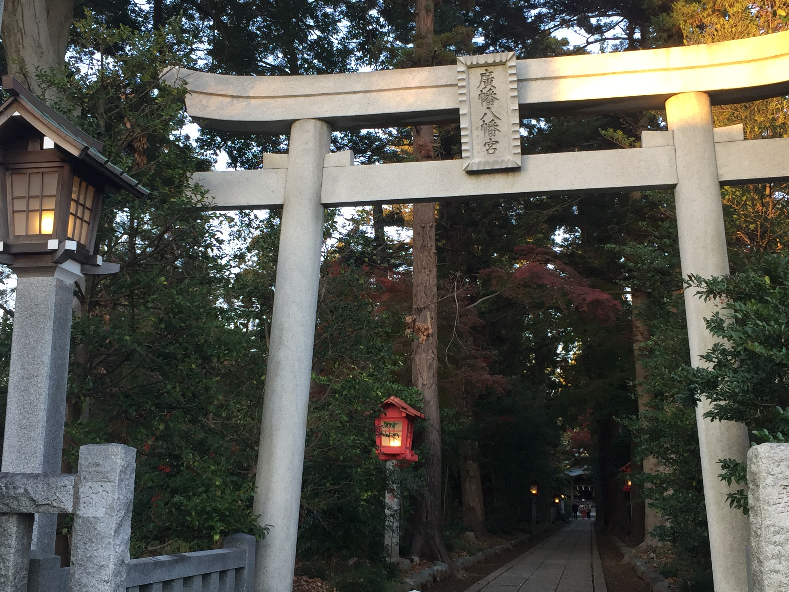

静謐
ちょっと遠出をした先で見つけた神社での1枚です。
夕方になり、暗くなる参道と明かりが灯る行燈の存在、そして本殿で明るくなる感じが
とても綺麗で何故か安心感でいっぱいになった感覚を残すために撮りました。
ちょっと遠出をした先で見つけた神社での1枚です。
夕方になり、暗くなる参道と明かりが灯る行燈の存在、そして本殿で明るくなる感じが
とても綺麗で何故か安心感でいっぱいになった感覚を残すために撮りました。